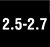

12.7. PackagesA package is a hierarchical file directory structure that defines a single Python application environment that consists of modules and subpackages. Packages were added to Python 1.5 to aid with a variety of problems including:
Along with classes and modules, packages use the familiar attribute/dotted attribute notation to access their elements. Importing modules within packages use the standard import and from-import statements. 12.7.1. Directory StructureFor our package examples, we will assume the directory structure below: Phone/
__init__.py
common_util.py
Voicedta/
__init__.py
Pots.py
Isdn.py
Fax/
__init__.py
G3.py
Mobile/
__init__.py
Analog.py
Digital.py
Pager/
__init__.py
Numeric.pyPhone is a top-level package and Voicedta, etc., are subpackages. Import subpackages by using import like this: import Phone.Mobile.Analog
Phone.Mobile.Analog.dial()Alternatively, you can use from-import in a variety of ways: The first way is importing just the top-level subpackage and referencing down the subpackage tree using the attribute/dotted notation: from Phone import Mobile Mobile.Analog.dial('555-1212') Furthermore, we can go down one more subpackage for referencing: from Phone.Mobile import Analog Analog.dial('555-1212') In fact, you can go all the way down in the subpackage tree structure: from Phone.Mobile.Analog import dial dial('555-1212') In our above directory structure hierarchy, we observe a number of __init__.py files. These are initializer modules that are required when using from-import to import subpackages but they can be empty if not used. Quite often, developers forget to add _inti_.py files to their package directories, so starting in Python 2.5, this triggers an ImportWarning message.
However, it is silently ignored unless the -Wd option is given when launching the interpreter. 12.7.2. Using from-import with PackagesPackages also support the from-import all statement: from package.module import * However, such a statement is dependent on the operating system's filesystem for Python to determine which files to import. Thus the __all__ variable in __init__.py is required. This variable contains all the module names that should be imported when the above statement is invoked if there is such a thing. It consists of a list of module names as strings. 12.7.3. Absolute ImportAs the use of packages becomes more pervasive, there have been more cases of the import of subpackages that end up clashing with (and hiding or shadowing) "real" or standard library modules (actually their names). Package modules will hide any equivalently-named standard library module because it will look inside the package first to perform a relative import, thus hiding access to the standard library module. Because of this, all imports are now classified as absolute, meaning that names must be packages or modules accessible via the Python path (sys.path or PYTHONPATH).  The rationale behind this decision is that subpackages can still be accessed via sys.path, i.e., import Phone.Mobile.Analog. Prior to this change, it was legal to have just import Analog from modules inside the Mobile subpackage. As a compromise, Python allows relative importing where programmers can indicate the location of a subpackage to be imported by using leader dots in front of the module or package name. For more information, please see Section 12.7.4. The absolute import feature is the default starting in Python 2.7. (This feature, absolute_import, can be imported from __future__ starting in version 2.5.) You can read more about absolute import in PEP 328. 12.7.4. Relative ImportAs described previously, the absolute import feature takes away certain privileges of the module writer of packages. With this loss of freedom in import statements, something must be made available to proxy for that loss. This is where a relative import comes in. The relative import feature alters the import syntax slightly to let programmers tell the importer where to find a module in a subpackage. Because the import statements are always absolute, relative imports only apply to from-import statements.
The first part of the syntax is a leader dot to indicate a relative import. From there, any additional dot represents a single level above the current from where to start looking for the modules being imported. Let us look at our example above again. From within Analog.Mobile. Digital, i.e., the Digital.py module, we cannot simply use this syntax anymore. The following will either still work in older versions of Python, generate a warning, or will not work in more contemporary versions of Python: import Analog from Analog import dial This is due to the absolute import limitation. You have to use either the absolute or relative imports. Below are some valid imports: from Phone.Mobile.Analog import dial from .Analog import dial from ..common_util import setup from ..Fax import G3.dial. Relative imports can be used starting in Python 2.5. In Python 2.6, a deprecation warning will appear for all intra-package imports not using the relative import syntax. You can read more about relative import in the Python documentation and in PEP 328. |